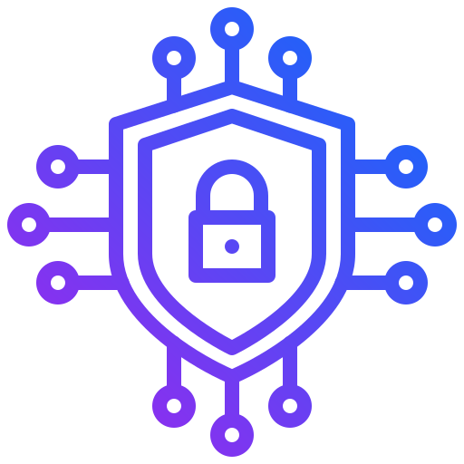

About Us
Welcome to SecureAI, where artificial intelligence meets cybersecurity. We provide smart and reliable solutions designed to protect digital systems, networks, and data from modern cyber threats.
Our technology uses advanced AI to detect risks, strengthen security, and help organizations stay protected in an increasingly digital world.
Our Mission
Our mission is to use the power of artificial intelligence to detect, prevent, and respond to cyber threats quickly and efficiently. We aim to make digital environments safer for businesses and individuals.
Why Choose SecureAI?

AI-Powered Security
SecureAI uses advanced artificial intelligence to analyze activity and detect potential cyber threats before they cause harm.
24/7 Monitoring
SecureAI provides round-the-clock protection to ensure your systems remain secure at all times.